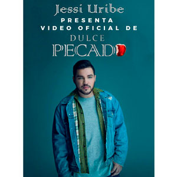

Directorio de Artistas
Air Boy
{kind=link}
Alex Santamaría
{kind=link}
Amanda Patricia
{kind=link}
Carlos Correa
{kind=link}
Danny Moreno
 |
Danny Moreno & La 13, viene robándose los corazones de sus seguidores con su nuevo éxito musical titulado "Ladrón malvado" con el cuál ha contagiado a todo el mundo de una nueva y única forma de hacer música. Con su original timbre de voz canta esta bella historia de amor tema de su propia autoría bajo la dirección y producción de su hermano y acordeonero Jorge Moreno. |
Dennis Fernando
{kind=link}
El Cóndor del Oriente
 |
“Con Dios y el pueblo”. Robinson Ospina, “El cóndor del oriente”, inicia el 2017 con el lanzamiento de “Se tragó de mi”, un sencillo que conquistará a todos los seguidores de la música popular. “El cóndor del oriente”, tuvo gran acogida con el público colombiano con sus éxitos “Tan llena de nada” y “El whatsapp”. |
Yiyo Bohórquez
 |
Oriundo de Santa Sofía – Boyacá. Cantante, compositor e intérprete del acordeón; desde muy niño su inclinación por el vallenato ha llegado a miles de seguidores con canciones como “Entrégame tu amor”, ahora presenta su nuevo éxito “Insistir en tu amor”. |
Esme
{kind=link}
Fanny Ospina
{kind=link}
Fernando Gil
 |
El caballero de la música popular. Tras los éxitos como "A mi manera", "Incondicional" y "Perdí", Fernando Gil decidió relanzar el sencillo "Como dices tú", un tema que se ha mantenido en los primeros lugares en Colombia y México desde su lanzamiento en 2015 y que produjo de la mano de Kike Santander. Contacto: |
Fredy García
 |
Fredy García, nacido en Bogotá, es el artista revelación de la música popular en Colombia con su sencillo "No me enamoro"; una canción llena de despecho con un sonido fresco y una voz suave pero potente a la vez y con mucha identidad, moderno pero conservando lo clásico de las guitarras y trompetas. |
Gaby Julio
{kind=link}
Guayaba Orquesta
{kind=link}
Guayacán Orquesta
{kind=link}
Jessi Uribe
|  | Jessi Uribe, el artista revelación de la música popular en Colombia presenta sus éxitos "Repítela", "Matemos las ganas" y "De dulce pecado". El video es de la autoría de Hugo Fernando Marín, grabado y masterizado en los estudios Salvaje Producciones en la ciudad de Bucaramanga, bajo la dirección de Edwin Jaimes.Contacto: Teléfono: 318 5532908 Instagram: @JessiUribe3 Facebook: JessiUribe www.jessiuribe.com |
{kind=link}
John Yara
{kind=link}
Juan Carlos Ensamble
 |
Juan Carlos Ensamble, el artista chocoano puso a bailar a toda Colombia con su nuevo sencillo “Tu y yo”, tema que hace parte de su nueva producción discográfica de este artista que sigue consolidando su carrera como solista. |
Juan Palau
{kind=link}
JuanK Índigo
{kind=link}
Julián del Castillo
 |
“Una voz, un espectáculo”. Artista colombiano del género popular, presenta su show live, con un espectáculo cargado de mucha energía, acompañado de una banda de 10 músicos profesionales y la mejor puesta en escena que en la actualidad tenga el género popular. Conocido como “El pisco”. Contacto: |
Julián López
 |
Julián López, inició su camino musical, con temas como "Te pido perdón", que le permitió ser reconocido como una de las jóvenes figuras con más futuro, del Eje Cafetero. Ahora, Julián López lanza su gran boom del 2017, "Borracho", compuesto por él mismo y con la producción de Freddy Montoya, más conocido como “El pisco”. |
Karval
{kind=link}
La Energía Norteña
 |
Los Energy Boys, presentan -No hay quinto malo- un álbum que sorprende a su público por la manera de seguir revolucionando la música norteña con su manera de combinar sonidos tradicionales con estilos progresivos Contacto: |
La Maquinaria Norteña
 |
Líderes en el mundo del regional mexicano,pioneros y precursores del género norteño con Sax, La Maquinaria Norteña vuelve al estudio de grabación y nos presentan el primero de los 16 temas que contendrá este disco. “Por obvias razones” es el nombre del sencillo y del disco con el cual La Maquinaria Norteña vuelve al camino de la conquista por los primeros lugares de popularidad.
|
Las Ingratas
 |
Se han consolidado como el mejor grupo de Tecnocarrilera femenino gracias a su exitosa carrera musical. Las Ingratas, de la mano del reconocido director y productor musical, Albeiro Sáenz, lanzan su tema inédito -Llorarás por mí- de la autoría de Lalo Bravo, proyectándose cómo éxito popular. |
Loren, “La voz angelical”
 |
Loren, “La voz angelical”, una niña de tan solo 10 años, nos presenta un show único con su caballo de alta escuela acompañada de su grupo norteño para cualquier tipo de evento. Contacto: |
Los Bacanes del Sur
 |
Los Bacanes del Sur, siguen cosechando, triunfos ahora con el lanzamiento de su nuevo sencillo titulado –Se terminó-, de la autoría de Israel Dasis, es una canción popular romántica al estilo de “Los Bacanes del Sur”. La canción –Se terminó– provocará sentimientos encontrados en quienes la escuchen. Contacto: |
Los De Yolombó
{kind=link}
Los Hermanos Medina
{kind=link}
Los Inquietos
 |
Los Inquietos del Vallenato presentan el video de su más reciente sencillo "Dónde está el amor", tema de la autoría del reconocido acordionista y compositor Alvin Anaya “El mafia”, canción que ha obtenido excelente aceptación gracias a su historia real y cotidiana, donde se reclama a la pareja infiel advirtiéndole que no se le ocurra volver, con la cual muchos se han identificado. Contacto: |
Marcos “El bohemio”
{kind=link}
Mau G
 |
Mau G, “La esencia”, es un artista urbano con más de 7 años de trayectoria musical a nivel profesional, y pone a consideración de los amates de la música urbana, "Oh baby", su más reciente inspiración para que la disfruten y se la gocen, la cual ya está disponible en toda las plataformas digitales. Contacto: |
Mauricio Ceballos
 |
Mauricio Ceballos, “La voz del sentimiento popular” con canciones como “La traicionera” y “Ella me hizo malo” llega en este 2017 con “Me pego mis tragos”, una canción que ocupa los primeros lugares a nivel nacional. Además, Mauricio Ceballos suma un éxito más en su carrera musical “Los dos la quisimos” tema que comparte con Yeison Jiménez. Contacto: |
Miguel Vaquero
 |
El artista paisa de música popular Miguel Vaquero, estrena su más reciente sencillo "Sé que fallé", una producción de Felinos Producciones, sumando un nuevo éxito a su recorrido. “Sé que fallé”, demuestra nuevamente los aires innovadores que Miguel Vaquero le está aportando al género popular desde su disco “Un solo sentimiento”. |
Néstor Neira
{kind=link}
Nicky White
{kind=link}
Nubia Velasco
{kind=link}
Olider Montana
 |
“Sin fortuna”, es el más reciente trabajo discográfico de Olider Montana. El video que fue grabado en San Luís, Tolima, y ya tiene más de 12 mil visualizaciones en el canal de YouTube. |
Orlando López
 |
"Tu imagen y el trago" es el título del nuevo sencillo del cantautor colombiano Orlando López que se lanzó en los principales medios de comunicación. El tema es de la autoría del maestro Argemiro Jaramillo y está bajo la producción de Johan Úsuga. |
Óscar Javier Rosero
 |
Óscar Javier Rosero, el cantautor ha logrado posicionar muchas de sus canciones a nivel nacional entre ellas su más reciente éxito –El pretexto-, una canción arrolladora con la cual conquista a todo el público colombiano. |
Panche de oro
{kind=link}
RisaLoca
{kind=link}
Romulito “El andariego”
{kind=link}
Sara Jaramillo
{kind=link}
Stokoff
 |
Después de lograr los primeros lugares en los listados radiales en Colombia y la Costa Este de los Estado s Unidos, el artista regresa para promocionar su más reciente sencillo y video musical titulado "Pensando en ti", tema de su completa autoría, en donde habla de una historia de amor que se termina y uno de los protagonistas no logra olvidar a la otra persona por más que lo intenta. Contacto: |
Ulises Santacruz
{kind=link}
Víctor Manuel Ampudia
 |
Llegó el nuevo estilo de la música popular, Víctor Manuel Ampudia y su éxito “Una noche más”, que seguramente dará de qué hablar en el país. Comparte su tema "Una noche más", en YouTube. |
Wilmar “El León”
{kind=link}
Wilmer Ariza
 |
Wilmer Ariza, presenta con un orgullo su más reciente producción discográfica en el mercado nacional –Que me mate el licor– que hace parte del disco“El patrón del norteño”, le canta al amor, a la vida y a despecho; es compositor y realiza sus presentaciones en vivo con una espectacular agrupación “Banda bravo” de la ciudad de Chiquinquirá (Boyacá). Contacto: |
{kind=link}
{kind=link}